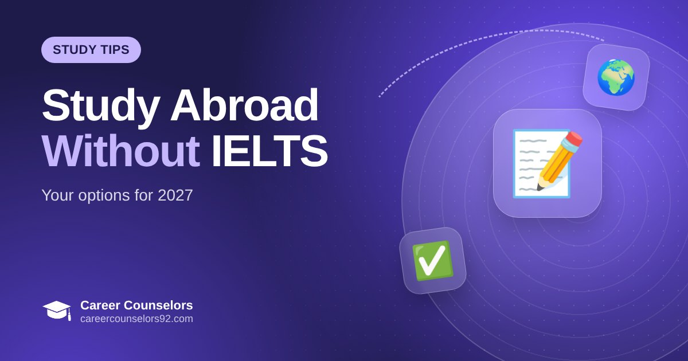

Study Abroad Without IELTS: Options for Pakistani Students in 2027
Can you study abroad without IELTS? Learn which countries and universities accept MOI letters, Duolingo, PTE or their own tests, and what visa rules mean for Pakistani students.

Key takeaways
- Many universities accept an MOI letter, PTE, Duolingo or their own English test.
- Italy, Hungary and Cyprus are the most flexible; UK and Ireland depend on the university.
- Visa rules apply too, so a university waiver doesn't cover every country.
In this article
IELTS is the best-known English test, but it is not the only way to prove your English. Many universities in Europe accept other evidence. For Pakistani students who studied in English, this can save time and money. Here is what "without IELTS" really means.
What universities accept instead of IELTS
- Medium of Instruction (MOI) letter. A letter from your previous university or college confirming your degree was taught in English.
- Other English tests, such as PTE Academic, TOEFL or the Duolingo English Test, where the university accepts them.
- The university's own English test or interview, usually online.
- Strong English grades in O/A Levels or intermediate, accepted by some universities.
Country by country
Italy: many public universities accept an MOI letter for English-taught programmes. This is one of the most flexible destinations.
Hungary and Cyprus: several universities accept MOI letters or run their own English test.
UK: some universities waive IELTS for students with strong English results or previous English-medium study. UK student visa rules also apply, so the university must be able to assess your English for your course level.
Ireland: most universities ask for IELTS or an equivalent test. A few may accept alternatives.
Is skipping IELTS a good idea?
If your English is strong, an MOI route can save you months. But a good test score can open more universities and scholarships. Your interview performance at the embassy also matters, so good spoken English helps either way.
How we help
We check your transcripts, English background and target country, then shortlist universities that accept your evidence. Send us your details for a free profile check.
Get a free profile check from a Career Counselors counselor — usually same-day reply.
Frequently asked questions
Which country is easiest to study in without IELTS?
What is an MOI letter?
Study abroad and student visa consultants in DHA Lahore, guiding students for the UK, Ireland, Italy, Hungary and Cyprus. Last reviewed 18 October 2026.
This guide is general information, not legal or immigration advice. Rules, fees and deadlines change — always check official university, scholarship and embassy sources, or ask our counselors about your case.